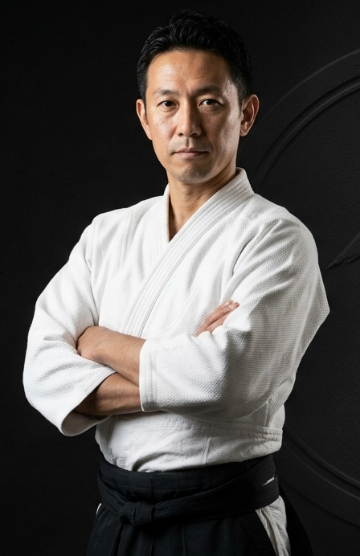

ABOUT 教室紹介
合気道とは
合気道は、いたずらに力で争うことをせず、相手と調和し、心身を鍛錬する武道です。
試合を行わないため、老若男女問わず、それぞれのペースで稽古を続けることができます。
FEATURES 教室の特徴
- 初心者歓迎・無料体験あり
- 子どもから大人まで一緒に学べる環境
- 礼儀作法を重んじ、心を育む
- 一人ひとりに寄り添う丁寧な指導
SCHEDULE 稽古日時
毎週 水曜日・土曜日
18:00〜19:30 子どもの部
19:30〜21:00 一般の部
月謝：6,000円
今後の予定
- 8/6（水）通常稽古
- 8/9（土）通常稽古
- 8/13（水）休み（お盆休み）
- 8/24（日）特別演武会
ACCESS アクセス
船尾会館
〒592-8342 大阪府堺市西区浜寺船尾町西3丁305
【最寄り駅】
船尾駅より徒歩10分 / 諏訪ノ森駅より徒歩14分 / 津久野駅より徒歩23分
【周辺学校】
浜寺中学校より徒歩5分 / 浜寺東小学校より徒歩9分 / 浜寺小学校より徒歩10分
※車での来館も可能です。
INSTRUCTOR 指導員紹介

前田 高司 Maeda Takashi
合気道〇段 / 指導歴〇年
「誰もが安心して稽古できる道場を目指しています。一緒に合気道の奥深さを楽しみましょう。」